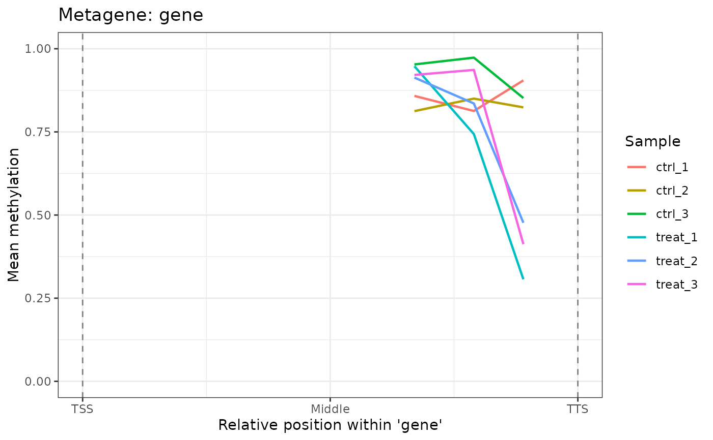
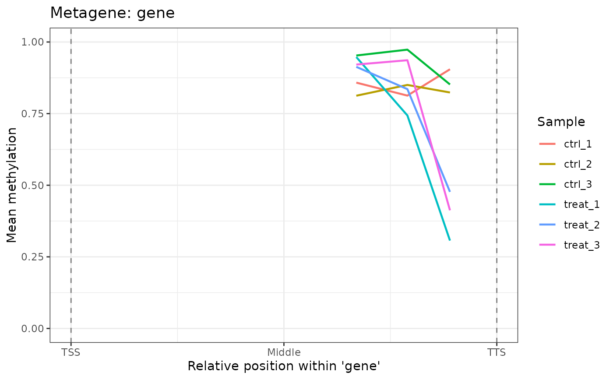

Computes average methylation beta values at normalized positions across genomic features (e.g., genes from TSS to TTS) and plots the smoothed profile. Useful for assessing whether methylation is enriched at particular positions within a feature class.
Arguments
- object
A
commaDataobject with a non-emptyannotationslot or a user-suppliedfeaturesGRanges.- feature
Character string specifying the feature type to use as the reference. Must match a value in the
feature_typemetadata column of the annotation. Default"gene".- mod_type
Character string specifying a single modification type (e.g.,
"6mA","5mC"). IfNULL(default), all modification types are used.- n_bins
Positive integer. Number of equal-width bins to divide the normalized feature position \([0, 1]\) into. Default
50.
Value
A ggplot object. The x-axis shows normalized
position within the feature (0 = TSS, 0.5 = midpoint, 1 = TTS); the
y-axis shows mean methylation (beta). One line is drawn per sample,
colored by sample name. Dashed vertical lines mark the TSS (0) and
TTS (1).
Details
Internally calls annotateSites(type = "metagene") to compute
normalized positions (0 = TSS, 1 = TTS) for each methylation site that
overlaps a feature of the requested type. Sites that do not overlap any
feature are excluded from the plot. The mean beta value is then computed
within each position bin for each sample.
Examples
data(comma_example_data)
plot_metagene(comma_example_data, feature = "gene")

# Only 6mA sites
plot_metagene(comma_example_data, feature = "gene", mod_type = "6mA")
